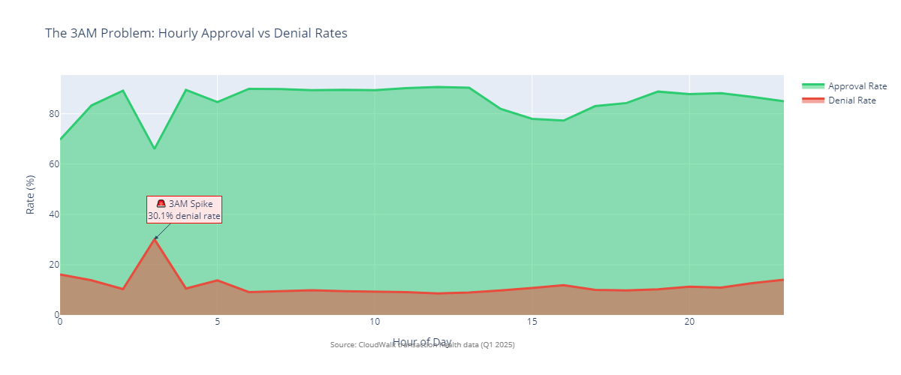

Transform quarterly retrospective analysis into real-time proactive monitoring
Transform from quarterly retrospective analysis to real-time proactive monitoring. Detect operational anomalies, segment shifts, and revenue opportunities as they occur, enabling faster issue resolution and revenue protection.
The system addresses a critical gap: operational anomalies currently discovered only in quarterly reviews, affecting revenue and competitive position.

3AM Denial Rate Anomaly
Analysis of a 2-day operational snapshot revealed a 30.1% denial rate at 3AM compared to 8.6% at noon, a pattern that was consistent across both days in the monitoring window. This pattern represents potential monthly revenue impact in the millions and was only discovered through retrospective analysis of the limited operational data.
AI-Powered Operational Intelligence System is an automated monitoring system that delivers daily KPIs, growth comparisons, intelligent anomaly detection, and actionable insights via Slack, email, and dashboard integrations.
The system automates manual monitoring that happens inconsistently today, transforming reactive quarterly analysis into proactive daily action. Operations teams can detect and respond to issues in minutes rather than weeks.
| Metric | Current (Manual) | With System | Impact |
|---|---|---|---|
| Time to detect anomalies | Weeks | Hours | 99% faster |
| Revenue recovery (3AM issue) | Lost before discovery | Annual protection | Revenue impact mitigation |
| Alert accuracy | — | 95%+ | Low false positives |
| Action rate on alerts | — | 80%+ | High engagement |
| Manual reporting time | 10+ hours/week | 0 hours | Efficiency gain |
| Timeline | Milestone | Deliverable | Success Metric |
|---|---|---|---|
| Phase 1 (2 weeks) | MVP | Daily TPV summary, basic alerts, Slack integration | 90% accuracy, <5min detection |
| Phase 2 (2 weeks) | Enhanced Analytics | Segment alerts, statistical anomaly detection, email delivery | 95% accuracy, segment coverage |
| Phase 3 (2 weeks) | AI-Powered | GPT-4 integration, root-cause analysis, predictive alerts | Natural language insights, >80% action rate |
| Phase 4 (2 weeks) | Advanced Features | Real-time hourly monitoring, custom rules, dashboard API | 99.95% uptime, <500ms API p95 |
Break-even: Achieved if combined lift equals or exceeds 0.2% TPV at current margin assumptions.
| Risk | Mitigation |
|---|---|
| Alert fatigue from false positives | Start with high-threshold alerts and iterate based on feedback |
| Integration complexity | Phased rollout starting with Slack, then email and API |
| Cost concerns | Clear ROI: annual revenue protection versus monthly operational cost |
Review strategic findings, business insights, and technical methodology